Comece aqui Os 25 passos, lista de compras e custo
Passo a passo resumido (marque ao terminar)
Etapa 0 · Limpeza e vãos → ver etapa
Etapa 1 · Canis → ver etapa
Etapa 2 · Estrutura → ver etapa
Etapa 3 · Fechamento → ver etapa
Etapa 4 · Aves → ver etapa
Lista de compras e custo estimado (anúncios online de 19/11/2026)
| Item | Quantidade | R$ |
|---|---|---|
Tela hexagonal 1" × 1,50 m (por metro) | ~16 m | 190–260 |
Tela soldada galvanizada 1/2" (altura 1 m, por metro): grade do Canil 1, grade do Canil 2 e tiras | ~4,5 m | 113–240 |
Estacas de eucalipto tratado 2,20 m | 3 grossas Ø 8–10 + 2 finas Ø 5–7 | 63–120 |
Sarrafo 5 × 2,5 × 300 cm | 9 (~24 m) | 54–234 |
| Arame liso nº 14 | 20 m | 15–25 * |
Arame recozido nº 18 + grampos 3/4" | 1 rolo + 1 caixa | 25–35 * |
| Dobradiças + ferrolho da porta | 1 kit | 25–40 * |
Pregos, buchas 8 mm e parafusos | 1 pacote de cada | 20–30 * |
Poleiro 4–5 cm × 1,30 m (madeira sem tratamento) | 1 | 0–10 * |
| Tábuas do tabuleiro + soleira da porta | sobras | 0–30 * |
| Areia | 1 saco | 5–10 * |
| Cal hidratada | 20 kg | 13–34 |
| Maravalha grossa | 1 fardo | 25–40 * |
Galão 20 L + cano 100 mm | 1 | 20–40 * |
| Balde 10 L + kit de 10 bicos nipple | 1 + 1 | 30–45 |
| Balde 20 L (ninho, ~16 semanas) | 1 | 15–25 * |
| Total da obra (nova v1) | — | ≈ R$ 610 – 1.220 |
| 5 frangas de 35 dias, vacinadas | 5 | 100–175 |
| Total com as aves (sem ração) | — | ≈ R$ 710 – 1.400 |
Faixas de anúncios online de 19/11/2026; itens com * são estimativa sem anúncio conferido (peça orçamento em loja de João Pessoa).
Notas sobre o custo: essa opção custa ~R$ 190–460 a mais que um cercado reduzido, mas não é gasto extra: é a parte de fora da v2 comprada adiantada. Na passagem para a v2, falta comprar o material da mureta (~R$ 80–130 + frete, ver CONTEXTO-COMPLETO-PROJETO.md), o telhado novo e o interior do Canil 2. Ração ainda não cotada. Ferramentas estão na seção Ferramentas e não entram no total.
Detalhe de cada material com foto (separado entre peças finais da v2 e temporárias): ver Materiais v1.
v1 = casca da v2 Solário 3,00 × 3,00 m já nas linhas finais da v2
Na nova v1, a parte de fora é montada já nas coordenadas definitivas da v2 (CONTEXTO-COMPLETO-PROJETO.md, 8–10 aves), para não desmontar nem perder nada depois. Fica faltando só a mureta e o telhado novo, mais umas poucas peças temporárias.
x 0–3,00 e z 1,00–4,00: 3 × 1 m de patamar mais 3 × 2 m de terra. 5 estacas socadas com topo a 1,70 m, sarrafos de topo (1,70 m) e de base (0,20 m), porta 0,80 × 1,50 m na direita e teto plano a 1,70 m.
0,20 m) entra um rodapé + saia temporário de 50 cm (com pedras por fora) e uma soleira na porta. Entre a telha velha e o teto plano entra uma rampa de tela (reaproveitada na v2).
Coordenadas e medidas (iguais às do 3D, em metros)
x a partir do muro esquerdo · z a partir da parede do fundo dos canis.
| Peça | Onde / Medida |
|---|---|
| Canil 1 | x 0–1,30, z 0–1,00 (piso ~12–13 cm acima da terra) |
| Divisória e Canil 2 | Divisória x 1,30–1,45; Canil 2 x 1,45–2,75; parede externa até x 2,90 (grade fechada c/ tela 1/2") |
| Patamar (cimento) | z 1,00–2,00, ~12–13 cm acima da terra (3 × 1 m) |
| Terra do solário | z 2,00–4,00 (3 × 2 m) |
| Solário (igual à v2) | x 0–3,00, z 1,00–4,00 (3,00 × 3,00 m, ~9 m²) |
| Telha velha (fica na v1) | Borda da frente a 1,20–1,30 m do patamar (~1,32 m da terra); topo da parede da frente dos canis a ~1,16 m do patamar |
3 estacas grossas (Ø 8–10 cm × 2,20 m) | (0,06; 3,94) frente-esq., (2,94; 3,94) frente-dir. e (2,94; 3,01) batente da porta (50 cm socadas, topo a 1,70 m) |
2 estacas finas (Ø 5–7 cm × 2,20 m) | (1,50; 3,94) meio da frente e (2,94; 2,05) início da terra à direita (50 cm socadas, topo a 1,70 m) |
| Sarrafos de topo e base | Topo a 1,70 m (frente, direita e esquerda no muro); base a 0,20 m da terra (frente e direita, pregados nas estacas) |
| Lateral direita | x = 2,94: tela de z 1 → 3,05, porta, tela de z 3,85 → 4,00 (z 1–2 preso em sarrafo na parede do canil e no patamar c/ bucha 8 mm) |
| Porta 0,80 × 1,50 m | Na lateral direita, z 3,05–3,85, de 0,20 a 1,70 m, com diagonal, ferrolho e soleira temporária (0,80 × 0,20 m) |
| Teto plano + Rampa | Teto plano a 1,70 m (x 0–3,00, z 1,75–4,00, 5 fios em x 0,5..2,5 + fio transversal em z 1,75); rampa temporária de z 1,00 (~1,15 m do patamar) até z 1,75 |
| Muro esquerdo | x = 0 (medido 1,57–1,62 m da terra); faixa de tela hexagonal do topo do muro até 1,70 m |
Ferramentas & EPIs O que precisa para montar a v1 (sem alvenaria e sem mexer em telha)

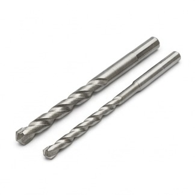


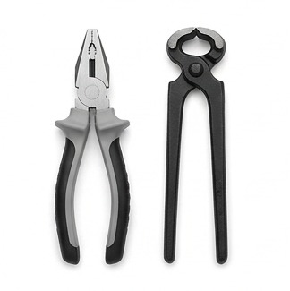


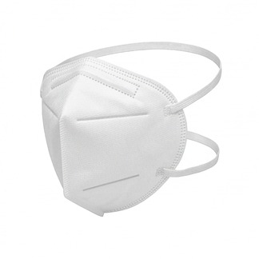

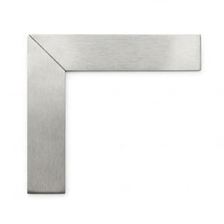
Outros itens de uso na obra e manejo: broxa ou pincel (para caiar), vassoura, pau para socar terra, peneira (para o tabuleiro), mangueira (para lavar o balde-ninho) e papel branco ou lenço (para conferir pixilinga à noite).
Lista de Compras v1 Materiais: peças da v2 já no lugar vs temporárias
≈ R$ 610 – 1.220 na obra; ≈ R$ 710 – 1.400 com as 5 frangas) estão em Comece aqui. Os itens do grupo temporário de tela saem dos mesmos ~16 m de tela hexagonal e ~4,5 m de tela soldada 1/2" listados no primeiro bloco.
| ✓ | Foto | Etapa / Uso | Material | Especificação | Quantidade |
|---|---|---|---|---|---|
| PEÇAS DA v2 JÁ NO LUGAR (continuam na v2 sem desmontar) | |||||
 | Etapa 3 | Tela hexagonal 1" × 1,50 m (por metro) | Laterais, frente (0,20–1,70 m), faixa no muro, porta e teto plano (os ~16 m já incluem a rampa e o rodapé + saia temporários) | ~16 m | |
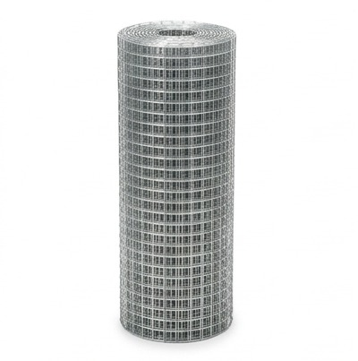 | Etapas 0 e 1 | Tela soldada galvanizada 1/2" (alt. 1 m, por metro) | Grade do Canil 1, grade do Canil 2 (fechada contra rato) e 5 tiras dos vãos | ~4,5 m | |
  | Etapa 2 | Estacas de eucalipto tratado 2,20 m | Socadas 50 cm sem concreto, topo a 1,70 m: 3 grossas Ø 8–10 cm + 2 finas Ø 5–7 cm | 3 grossas + 2 finas | |
 | Etapas 2 e 3 | Sarrafo 5 × 2,5 × 300 cm | Topo a 1,70 m (frente, direita, muro), base a 0,20 m (frente e direita), trecho do patamar, topo da parede (rampa) e porta | 9 | |
 | Etapa 3 | Arame liso nº 14 | 5 fios longitudinais (x 0,5 / 1,0 / 1,5 / 2,0 / 2,5) + 1 fio transversal em z 1,75 | 20 m | |
 | Etapas 0 e 3 | Arame recozido nº 18 + grampos 3/4" | Amarrar tela nos fios/vãos e grampear tela nos sarrafos e estacas | 1 rolo + 1 caixa | |
 | Etapa 3 | Dobradiças + ferrolho da porta | Para a porta 0,80 × 1,50 m na lateral direita (z 3,05–3,85) | 1 kit | |
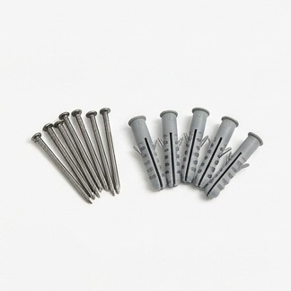 | Etapas 1, 2 e 3 | Pregos, buchas 8 mm e parafusos | Pregos p/ sarrafos e porta; buchas 8 mm e parafusos p/ muro, parede dos canis, patamar e suportes do poleiro | 1 pacote de cada | |
| TEMPORÁRIAS (só existem na v1; saem na passagem para a v2) | |||||
| Etapa 3 | Rodapé + saia de 50 cm (do rolo de ~16 m) | 20 cm em pé (chão até sarrafo de base) + 30 cm no chão por fora com pedras (~5,2 m); no patamar sem saia. Perde-se na v2. | 3 tiras de 0,50 m (de ~1,75 m do rolo) | |
 | Etapa 3 | Soleira da porta (0,80 × 0,20 m) | Tábua entre a estaca do batente e a base, embaixo da porta. Sai quando a mureta for feita (perde-se). | Sobras (junto c/ tabuleiro) | |
| Etapa 3 | Rampa de tela hexagonal (do rolo de ~16 m) | Do sarrafo em z 1,00 (~1,15 m do patamar, sem amarrar na telha) ao fio em z 1,75. Reaproveitada nos triângulos laterais e faixa vertical da v2. | ~3 m (incluso no rolo) | |
| Etapa 0 | 5 tiras de tela 1/2" nos vãos do Canil 1 (do rolo de ~4,5 m) | 15 cm × 1,00 m nos 4 lados entre parede e telha velha. Saem com a telha velha e vão para os vãos de ventilação da v2. | 0,75 m (5 tiras, incluso nos 4,5 m) | ||
| INTERIOR E MANEJO (Canil 1 e solário — seguem para a v2) | |||||
 | Etapa 1 | Poleiro 4–5 cm × 1,30 m | Madeira não tratada, solto sobre 2 suportes (sem parafuso no poleiro) | 1 | |
| Etapa 1 | Tábuas do tabuleiro (1,30 × 0,55 m, borda 5 cm) | Sobras de tábua (embaixo do poleiro, junto com a soleira) | Sobras | |
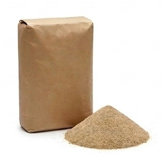 | Etapas 1 e 4 | Areia | ~3 cm no tabuleiro de dejetos e no banho de terra | 1 saco | |
 | Etapa 0 | Cal hidratada | Caiar paredes internas do Canil 1 e a viga velha | 20 kg | |
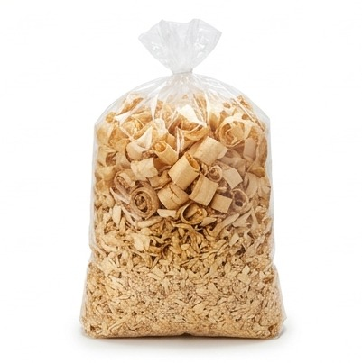 | Etapa 1 | Maravalha grossa | Cama de 8–10 cm no piso do Canil 1 | 1 fardo | |
 | Etapa 1 | Galão 20 L + cano 100 mm | Comedouro pendurado no canto da frente à direita do Canil 1 | 1 | |
| Etapa 4 | Balde 10 L + kit de 10 bicos nipple | Com tampa, pendurado no sarrafo da direita sobre o patamar | 1 + 1 | |
| Etapa 1 (~16 sem.) | Balde 20 L (ninho) | Deitado, plástico sem emenda, com borda na boca (entra com ~16 semanas) | 1 | |
Itens extras de manejo e aves da v1: 5 frangas de poedeira comercial (35 dias, vacinadas), ração de crescimento (até ~16 semanas) e de postura (depois), 1 ovo falso (para o ninho com ~16 semanas), folhas secas do quintal e cinza de lenha, pedras para segurar a saia por fora, bebedouro comum nos primeiros dias para treinar o bico, e pote de calcário ou farinha de ostra quando começarem a botar.
Oficina do Iniciante Técnicas da v1: caiar, socar estaca sem concreto, cortar madeira e pôr bucha
Na v1 não há mistura de massa nem alvenaria de tijolo. As 4 técnicas abaixo resolvem toda a montagem:
1. Como caiar o Canil 1 e a viga velha (técnica da v1)

2. Como socar as 5 estacas sem concreto (técnica da v1)


1,70 m da terra.3. Cortar madeira, furar com bucha 8 mm e prender tela


8 mm na alvenaria (muro esquerdo, frente da parede dos canis, lateral do Canil 2 e patamar), tire o pó, encaixe a bucha rente e aperte o parafuso com chave.
3/4" nos sarrafos/estacas e alicate com arame recozido nº 18 nos arames e emendas. Nunca amarrar na borda da telha.Etapa 0 · Medidas, Limpeza e Vãos Conferir medidas de 19/11, tirar a tralha, lavar, caiar e fechar vãos
📏 Medidas tiradas no local em 19/11/2026 (trena)
Medidas reais tiradas com a trena em 19/11 (fotos-19-11/LEIA.md). Elas definem as 5 tiras de tela 1/2" do Canil 1, a altura do sarrafo da rampa (~1,15 m do patamar) e a faixa de tela acima do muro esquerdo até 1,70 m.
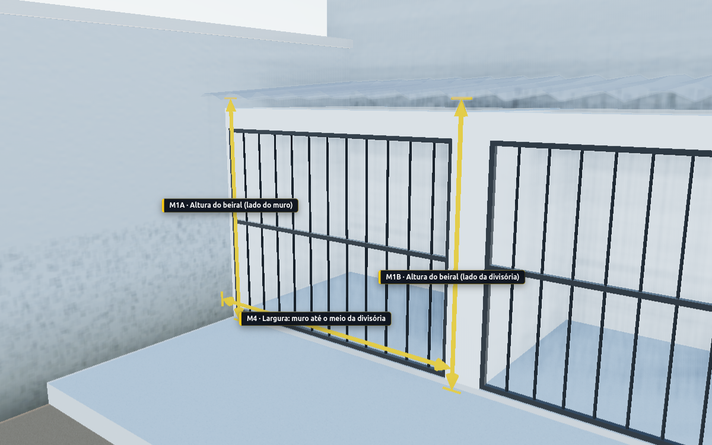


O que cada medida definiu na nova v1:
- M1 — Borda da telha velha (1,20–1,30 m do patamar / ~1,32 m da terra): o topo da parede da frente dos canis fica a
~1,16 mdo patamar. O sarrafo da rampa vai a~1,15 mdo patamar (logo abaixo da borda da telha), e dali a rampa de tela sobe até o fio transversal emz = 1,75 / 1,70 m. - M2 — Vãos parede–telha nos 4 lados do Canil 1:
4 / 9 cmna frente (M2A) e~5 cmna esquerda, fundo e divisória (M2B–M2D). Como todos passam de2 cm(passa rato), os 4 lados do Canil 1 levam 5 tiras de tela1/2". - M3 — Altura do muro esquerdo (1,57 m e 1,62 m da terra): como o teto da nova v1 já fica na altura da v2 (
1,70 m), entra uma faixa de tela hexagonal do topo do muro (1,57–1,62 m) até o sarrafo de topo a1,70 m. - M4 — Largura até o meio da divisória: marca onde termina o Canil 1 e começa o Canil 2 (
x 1,30–1,45). Na nova v1, o solário vai atéx = 3,00 m(casca da v2), passando pela frente dos dois canis.
Tabela conferida em 19/11/2026:
📷 Fotos reais do local (19/11/2026) — clique para ampliar


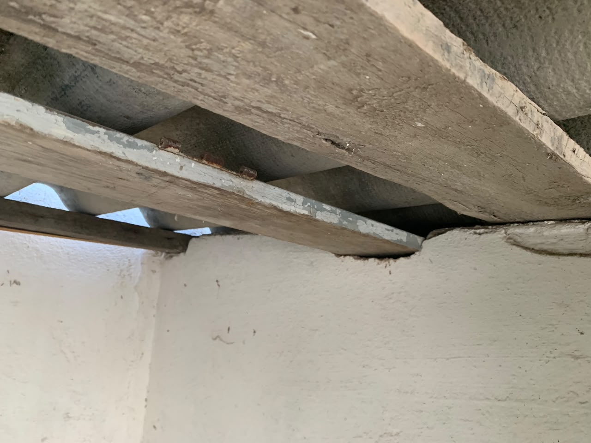
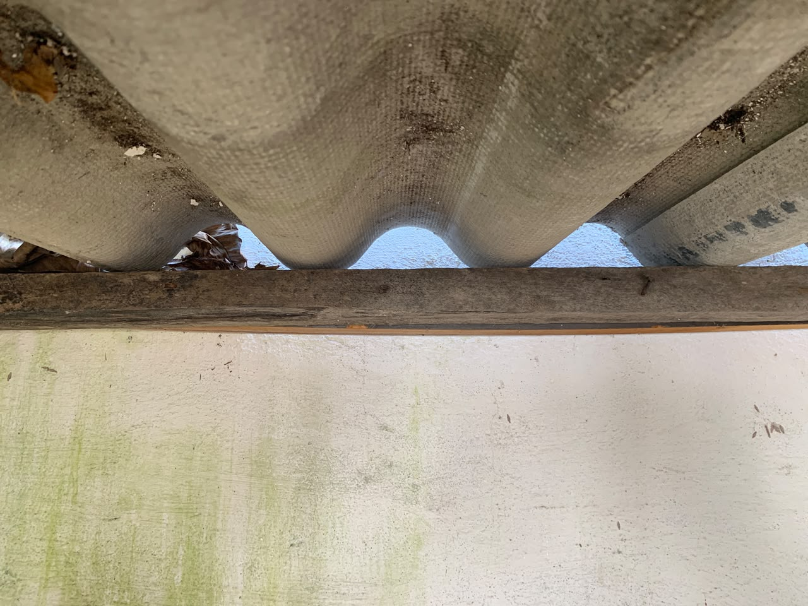
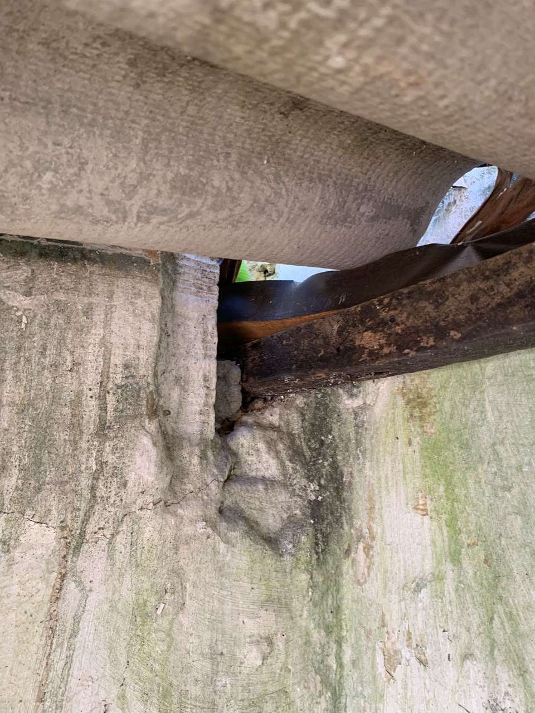

- Passo 1 · Tirar a tralha: com luvas, vassoura e pá/enxada, esvazie o Canil 1 e retire todas as tábuas velhas soltas e a lona velha entre a parede e a telha (esconderijo de ácaro vermelho e outros bichos).
- Passo 2 · Lavar: varra, lave o piso e as paredes do Canil 1 (com vassoura e mangueira) e deixe secar bem.
- Passo 3 · Caiar o Canil 1 e a viga: vestindo luvas e máscara PFF2, misture cal hidratada com água no balde e aplique com broxa ou pincel nas paredes internas do Canil 1 e na viga velha antes de as aves entrarem. Fecha microfrestas contra ácaro e tira o limo verde. Deixe secar bem.
- Passo 4 · Pôr as 5 tiras
1/2"nos vãos do Canil 1: todos os vãos entre parede e telha passam de2 cm(4 / 9 cmna frente emM2Ae~5 cmnos outros 3 lados emM2B–M2D). Corte 5 tiras de15 cm × 1,00 mde um pedaço de0,75 mdo rolo de tela soldada1/2"(com trena, alicate e luvas) e feche os 4 lados: cada tira fica de pé, rente à face interna da parede, presa embaixo com bucha8 mme arruela (ou grampo na viga de madeira, usando furadeira + broca vídea8 mme martelo) e dobrada em cima contra a telha, acompanhando as ondas (nunca amarrar na borda da telha). Na v2, saem com a telha velha e vão para os vãos de ventilação.
Etapa 1 · Canis 1 e 2 Telas 1/2" nas duas grades, poleiro solto, tabuleiro, maravalha, comedouro e ninho
- Passo 5 · Tela
1/2"na grade do Canil 1: meça com a trena, corte com o alicate (de luvas) a tela soldada1/2"e amarre em toda a grade do Canil 1 com arame recozido nº 18 torcido no alicate. De dia, a grade fica amarrada aberta; à noite, fica fechada no ferrolho para proteger de timbu (que rasga tela hexagonal fina). - Passo 6 · Tela
1/2"na grade do Canil 2 (fica fechada): novo na v1. Como o Canil 2 fica dentro do solário (x 1,45–2,75), corte com trena e alicate a tela soldada1/2"e amarre com arame recozido nº 18 na grade do Canil 2, deixando-a fechada (as aves não usam na v1). A tela vira uma caixa fechada para rato que entre pelo telhado do Canil 2 não chegar ao solário — já é peça da v2 no lugar. - Passo 7 · Suportes + poleiro solto: marque com a trena a
30 cmda parede do fundo e~30 cmde altura do piso, fure as paredes laterais com furadeira e broca vídea8 mm, encaixe buchas8 mme parafuse com a chave 2 suportes. Corte com o serrote 1 poleiro de1,30 m(4–5 cm, madeira não tratada) e apoie solto sobre os 2 suportes, sem parafuso no próprio poleiro (sai inteiro para escaldar e tomar sol). Sobe para45 cmcom~2 mesesde idade. - Passo 8 · Tabuleiro + areia: meça com trena e esquadro, corte as tábuas com o serrote, faça pré-furo com furadeira e broca fina de madeira e monte com pregos e martelo uma caixa rasa de
1,30 × 0,55 m, com borda de5 cm. Ponha embaixo do poleiro e encha com~3 cmde areia usando a pá/enxada. É o que mais segura o cheiro. - Passo 9 · Maravalha: espalhe
8–10 cmde maravalha grossa no resto do piso do Canil 1 usando luvas ou pá/enxada. - Passo 10 · Comedouro: monte com serrote/faca o comedouro de galão 20 L + cano
100 mme pendure com arame recozido nº 18 (torcido no alicate) no canto da frente à direita do Canil 1, na altura do dorso delas (rato e pardal não alcançam). - Depois (~16 semanas) · Ninho de balde: apoie e prenda com arame recozido nº 18 e alicate 1 balde de 20 L deitado (plástico sem emenda, borda na boca — lava com mangueira) no canto da frente à esquerda, a
15 cmdo piso, com 1 ovo falso dentro.
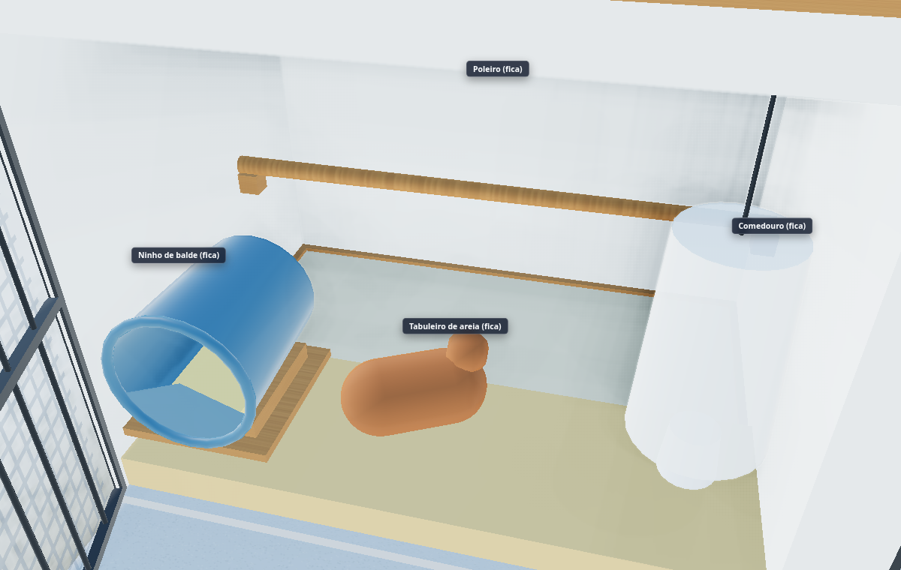
Etapa 2 · Estrutura (casca da v2) 5 estacas com topo a 1,70 m e sarrafos de topo e de base
- Passo 11 · Marcar e socar as 5 estacas com o topo a
1,70 m: com a trena, marque os 5 pontos finais da v2 na terra e abra os buracos de50 cmcom cavadeira (ou enxada), sem concreto: 📏 Como marcar com a trena: o 1º número é a distância do muro esquerdo; o 2º, da parede do fundo dos canis. Como a parede da frente dos canis fica em1,00, meça dela:3,94=2,94 mà frente da parede ·3,01=2,01 m·2,05=1,05 m(logo depois do patamar). Confira o esquadro: a diagonal entre os cantos da frente e os da parede tem que dar igual dos dois lados.- 3 estacas grossas (
Ø 8–10 cm × 2,20 m): canto frente-esquerda(0,06; 3,94), canto frente-direita(2,94; 3,94)e batente da porta(2,94; 3,01); - 2 estacas finas (
Ø 5–7 cm × 2,20 m): meio da frente(1,50; 3,94)e início da terra à direita(2,94; 2,05).
1,70 mda terra e devolva terra com pedras aos poucos com enxada/pá, socando bem cada camada com um pau. - 3 estacas grossas (
- Passo 12 · Sarrafos de topo a
1,70 m(frente, direita e esquerda no muro): meça com trena e esquadro e corte os sarrafos5 × 2,5 × 300 cmcom o serrote. Faça pré-furo (furadeira + broca fina de madeira) e pregue com pregos e martelo a1,70 mna frente (x 0–3,00) e na lateral direita (x = 2,94, dez 1,00até3,94). Na esquerda (x = 0), fure o muro com furadeira e broca vídea8 mme parafuse o sarrafo horizontal a1,70 mda terra com buchas8 mm, parafusos e chave. - Passo 13 · Sarrafos de base a
0,20 m(frente e direita): meça0,20 macima da terra com a trena, corte os sarrafos5 × 2,5 cmcom o serrote, faça pré-furo (broca fina de madeira) e pregue com pregos e martelo nas estacas da frente (x 0–3,00) e da direita (z 2,05–3,05ez 3,85–4,00, deixando o vão da porta livre). É exatamente a altura em que a mureta de tijolo da v2 vai chegar por baixo depois. - Passo 14 · Sarrafo no topo da parede dos canis (
z 1,00) para a rampa: meça com a trena a~1,15 mdo patamar (logo abaixo da borda da telha velha a1,20–1,30 m), dex 0ax 3,00. Corte o sarrafo5 × 2,5 cmcom o serrote, fure a parede da frente dos canis com furadeira e broca vídea8 mme prenda com buchas8 mm, parafusos e chave. É nele que a rampa de tela será presa — nunca amarrar na telha. - Passo 15 · Sarrafos do trecho do patamar (
z 1,00–2,00), na parede e no cimento: como na v2, na lateral direita sobre o patamar, fure a parede externa do Canil 2 (vertical) e o piso de cimento do patamar (horizontal, sem quebrar o cimento!) com furadeira e broca vídea8 mme parafuse os sarrafos5 × 2,5 cmcom buchas8 mm, parafusos e chave, ligando até a estaca(2,94; 2,05).
Etapa 3 · Fechamento Tela hexagonal, faixa no muro, porta, rodapé + saia, fios, teto e rampa
- Passo 16 · Tela hexagonal na frente e na direita (
0,20a1,70 m): usando trena, alicate e luvas, corte os panos de tela hexagonal1" × 1,50 mdo rolo de~16 m. Estique bem na frente inteira (3,00 m) e na lateral direita (z 1,00 → 3,05; pula o vão da porta; depoisz 3,85 → 4,00) e prenda nos sarrafos de base (0,20 m), nos sarrafos de topo (1,70 m), nas estacas e no sarrafo da parede com martelo e grampos3/4"(e arame recozido nº 18 no alicate nas emendas). - Passo 17 · Faixa de tela em cima do muro esquerdo (
x = 0): o muro tem1,57–1,62 mda terra (M3A/M3B), abaixo do teto a1,70 m. Corte uma faixa de tela hexagonal1"(com alicate e luvas) e feche do topo do muro até o sarrafo de topo a1,70 m(dez 1,00a4,00), prendendo com grampos3/4"e martelo no sarrafo superior e buchas8 mm/ arame nº 18 junto ao muro, sem deixar fresta para timbu. - Passo 18 · Porta de
0,80 × 1,50 msobre a soleira temporária: meça com trena e esquadro, corte os sarrafos5 × 2,5 cmcom o serrote, faça pré-furo com furadeira + broca fina de madeira e monte com pregos e martelo o quadro da porta (0,80 × 1,50 m) com uma diagonal (para não arriar). Feche a folha com tela hexagonal1"usando grampos3/4"e martelo e instale na lateral direita (z 3,05–3,85, de0,20a1,70 m) presa na estaca do batente(2,94; 3,01)com as dobradiças e ferrolho (chave). Embaixo da porta, entre a estaca do batente e a base, prenda uma tábua de soleira temporária de0,80 × 0,20 m(sobra cortada no serrote). - Passo 19 · Rodapé + saia de
50 cm, com pedras (temporário): corte~1,75 mdo rolo de tela hexagonal1" × 1,50 mem 3 tiras de0,50 mde largura com o alicate (de luvas). Na frente e na lateral direita na terra (~5,2 mtirando a porta), prenda20 cmem pé — do chão até o sarrafo de base (0,20 m) — com martelo e grampos3/4", e deixe30 cmdeitados no chão por fora, seguros com pedras contra quem cava. No trecho do patamar (z 1,00–2,00), prenda o rodapé no sarrafo parafusado no cimento, sem saia. - Passo 20 · Fios de arame liso nº 14: com o alicate (de luvas), estique bem e amarre 1 fio transversal em
z = 1,75a1,70 m(entre o sarrafo do muro esquerdo e a linha da direita) e 5 fios longitudinais emx = 0,5 / 1,0 / 1,5 / 2,0 / 2,5, indo do fio transversal emz = 1,75até o sarrafo de topo da frente (z = 4,00). - Passo 21 · Teto de tela a
1,70 m: estenda a tela hexagonal1" × 1,50 mplana por cima dos 5 fios (dex = 0a3,00e dez = 1,75a4,00) e amarre com arame recozido nº 18 torcido no alicate nos 5 fios, no fio transversal, nos sarrafos de topo e nas emendas. - Passo 22 · Rampa de tela do topo da parede até o fio de
z 1,75(temporária): corte~3 mde tela hexagonal1"(com alicate e luvas) e feche dex = 0a3,00, ligando o sarrafo no topo da parede da frente dos canis (z = 1,00,~1,15 mdo patamar, abaixo da telha velha — sem amarrar na telha) até o fio transversal emz = 1,75 / 1,70 m, amarrando com arame recozido nº 18 e grampeando no sarrafo com grampos3/4". Na v2, essa tela sai e é reaproveitada nos triângulos laterais e na faixa vertical emz = 1,75.
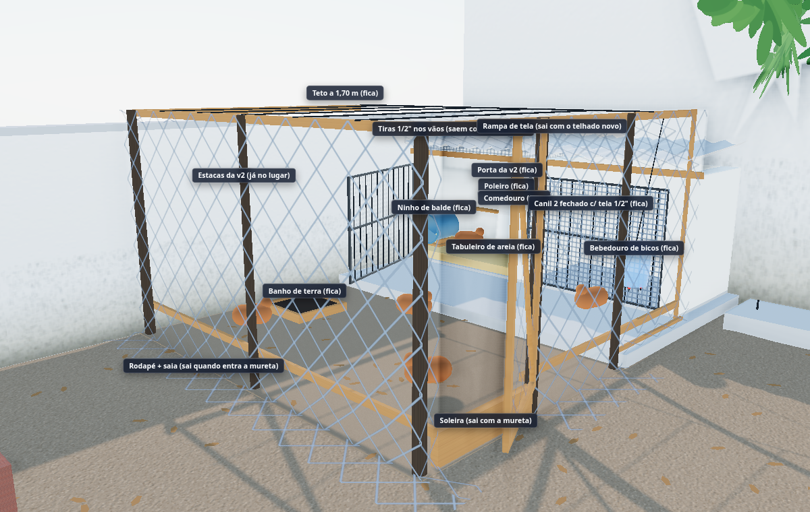
Etapa 4 · Aves e Operação Balde de bicos no patamar, banho de terra, folhas e 5 frangas
- Passo 23 · Balde de bicos sobre o patamar: monte o balde de 10 L com tampa e 2–3 bicos nipple no fundo. Pendure com arame recozido nº 18 (torcido no alicate) no sarrafo da lateral direita (
x = 2,94), sobre o patamar (z 1,00–2,00, para os pingos caírem no cimento e não virarem lama), medindo com a trena para o fundo ficar na altura da cabeça delas esticada. - Passo 24 · Banho de terra + folhas: deixe o patamar (
3 × 1 m) em cimento liso, sem cama (raspar 2× por semana). Na parte de terra (z 2,00–4,00,3 × 2 m), espalhe com enxada/pá folhas secas do quintal (revirar 1× por semana) e monte num canto o banho de terra misturando areia e cinza de lenha com a enxada. - Passo 25 · Soltar as 5 frangas, com bebedouro comum nos primeiros dias: escolha 5 frangas de poedeira comercial (Lohmann, Isa Brown ou Embrapa 051) com 35 dias, vacinadas (em João Pessoa não precisam de lâmpada). Antes de entrarem, olhe embaixo das asas e em volta da cloaca. Nos primeiros dias, deixe também um bebedouro comum junto e toque no bico nipple para ensiná-las a beber.
- Dia e noite · Grade do Canil 1 e postura: de dia, a grade do Canil 1 fica amarrada aberta; ao escurecer, elas entram sozinhas e você fecha no ferrolho. Abasteça o comedouro com ração de crescimento até ~16 semanas e troque para ração de postura depois disso (quando entra o ninho de balde 20 L com ovo falso e, ao começarem a botar, um pote de calcário ou farinha de ostra).


Seção 7 · Rotina Manutenção diária, semanal e mensal da v1
| Quando | O quê | Tempo |
|---|---|---|
| Todo dia | Abrir a grade de manhã, fechar à noite, olhar o balde e, depois de ~18–20 semanas, pegar os ovos | 2 min |
| 2× por semana | Peneirar o tabuleiro e raspar o patamar (o cocô vai para a compostagem da horta) | 5 min |
| 1× por semana | Revirar a maravalha e as folhas e completar o balde de água | 10 min |
| A cada ~3 semanas | Encher o comedouro | 5 min |
| 1× por mês | Conferir pixilinga à noite (seção abaixo) | 5 min |
| A cada 2–3 meses | Trocar toda a cama, que vai para a horta | 20 min |
Estimativas, sem medição: 5 aves bebem por volta de 1–1,5 L/dia no calor, então 10 L duram ~1 semana. A ração é ~120 g/dia por adulta (vídeo E7paYev-HyA), e o galão de 20 L dura 2–3 semanas. As hortas continuam como no PROJETO-HORTAS.md.
Seção 4 · Pixilinga Prevenção e controle de ácaros e piolhos de galinha (vale para v1 e v2)
O ácaro vermelho passa o dia escondido em fresta de madeira, emenda de ninho e trinca de parede, e sobe nas aves à noite. Por isso:
- Sem esconderijo: caiar (cal hidratada com água) as paredes internas do Canil 1 e a viga velha antes de as aves entrarem (também tira o limo verde), e tirar a tralha e as tábuas velhas soltas de perto dos canis.
- Poleiro removível: ele fica solto, apoiado em 2 suportes parafusados na parede, sem parafuso no próprio poleiro — assim sai inteiro para escaldar e tomar sol.
- Ninho de balde: balde de 20 L deitado, de plástico, sem emenda, com uma borda na boca. Lava com mangueira. A v2 passa a usar 3 baldes no lugar das caixas de tábua.
- Banho de terra: canto do solário com areia e cinza de lenha. É o que elas fazem por conta própria contra parasita.
- Pardal fora: comedouro dentro do canil e tela no solário inteiro. Pássaro de fora traz ácaro.
- Ave nova: comprar de fornecedor que vacina; antes de entrar no bando, olhar embaixo das asas e em volta da cloaca; manter 2–3 semanas separada.
- Conferência 1× por mês, à noite: passar papel branco ou lenço embaixo do poleiro e nas emendas. Pontinhos vermelhos ou cinza que se mexem são ácaro.
Seção 8 · Evolução Passagem da v1 para a v2 (nada de fora é desmontado)
Como a casca externa da v1 já está nas coordenadas finais da v2, nenhuma peça de fora é desmontada — as aves ficam no galinheiro o tempo todo:
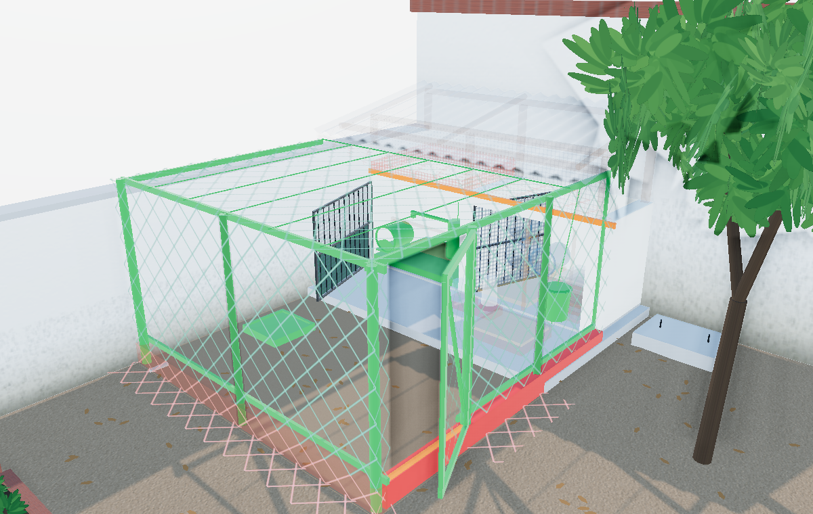
- Mureta: baldrame
10 × 15+ 1 fiada de tijolo (20 cm), feitos por baixo do sarrafo de base, entre as 5 estacas que já estão socadas. Antes, tirar a faixa de rodapé + saia de cada trecho, um trecho por vez, e trocar a soleira da porta pela mureta. Mais o dreno (cano PVC40 mmcom tampão). - Telhado novo: a telha velha sai, junto com as 5 tiras
1/2"dos vãos do Canil 1, e as aves ficam presas no Canil 1 nesse dia. Quando o telhado novo estiver em cima, tirar a rampa de tela e fechar os triângulos laterais sob o telhado e a faixa vertical emz 1,75com a tela da rampa. - Interior do Canil 2: abrir a grade para as aves, instalar os 3 ninhos de balde (o balde da v1 é um deles) e o 2º poleiro (no Canil 1, a
65 cmdo fundo).
✅ Fica no lugar
- as 5 estacas (3 grossas + 2 finas);
- os sarrafos de topo (
1,70 m) e de base (0,20 m); - a tela hexagonal das laterais, frente, faixa do muro e teto plano (
1,70 m); - a porta
0,80 × 1,50 mcom dobradiças e ferrolho; - os fios de arame nº 14 do teto;
- a tela soldada
1/2"nas grades do Canil 1 e do Canil 2; - todo o interior do Canil 1 (poleiro, tabuleiro, comedouro, ninho) e o balde de bicos.
♻️ Sai (e para onde vai)
- rampa de tela hexagonal (
~3 m): sai quando o telhado novo cobrir atéz 1,75e fecha os triângulos laterais sob o telhado + a faixa vertical emz 1,75; - 5 tiras de tela
1/2"dos vãos do Canil 1: saem com a telha velha e vão para os vãos de ventilação da v2.
🗑️ Perde-se
- o rodapé + saia (
~5,2 m × 0,5 mde tela hexagonal); - a soleira da porta (
0,80 × 0,20 m); - os furos de bucha (que se tapam com massa).
Seção 9 · Riscos Pontos de atenção e medidas conferidas
- Mais obra antes das aves: são 5 estacas em vez de 2, e o solário já tem
~9 m²(3,00 × 3,00 m). Se as frangas chegarem antes, deixe-as no Canil 1 com a grade fechada e o bebedouro dentro até o solário fechar. - Saia e estacas: sem mureta, a saia é a única defesa contra quem cava — conferir as pedras toda semana. As estacas ficam com a madeira na terra até a mureta chegar, o que já é assim na v2 (estacas socadas na terra).
- Enchente: a terra do solário e o patamar alagam primeiro; o piso do canil fica a
~12–13 cmda terra. Em chuva forte: deixar as aves no canil, subir o comedouro e, depois, trocar a cama molhada. Ainda falta saber com que frequência alaga. - Medidas do local: tiradas em 19/11/2026 (
fotos-19-11/LEIA.md). O fundo da telha velha (altura atrás) não foi medido, mas não muda nada na v1.